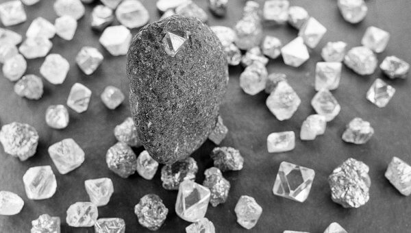
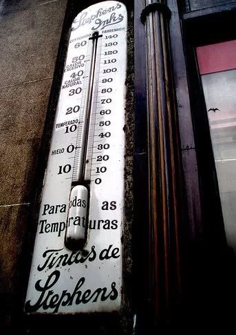
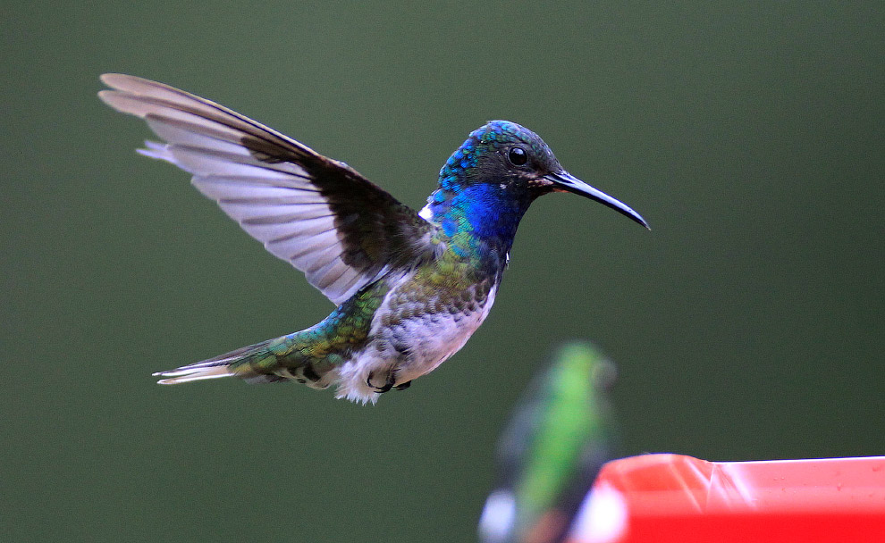
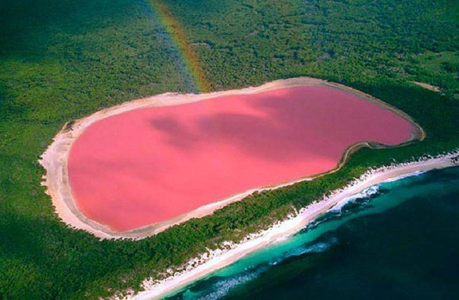
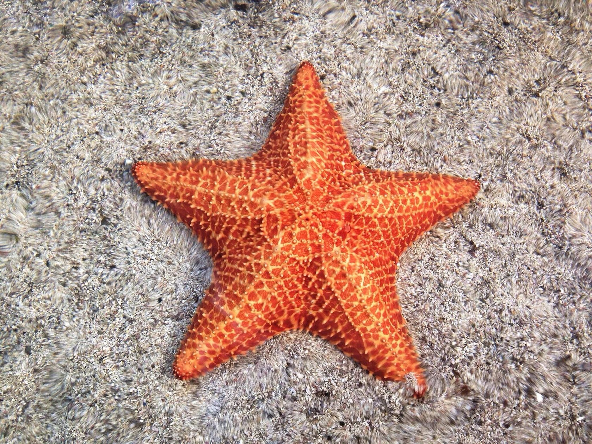

Топ 11 фактов, которые вы наверняка не знали:
Факт №1 Слово "Банк" произошло от итальянского слова "banco" - скамья. Это из-за того, что первые менялы, сидели на скамье в людных местах и выписывали чеки. "Банкир" брал имущество и в обмен давал бумагу, подтверждавшую, что клиент дал определенный объем денег. А потом можно было подойти к любому другому меняле, отдать чек и получить имущество обратно. Их услугами пользовались торговцы. Когда они собирались с золотом ехать в другой город, они брали чеки и ехали (или плыли по океану) только с бумажкой. Потом доезжали и обналичивали. Торговцы боялись пиратов. Кучу золота спрятать от них трудно, а листочек можно легко спрятать. Естественно, банк брал проценты за услугу. Бывало, что менялы могли потратить деньги из вкладов и тогда вкладчики разбивали голову менялы об его скамью.
Факт №2 У новорождённого ребёнка в скелете почти 270 костей, что намного больше, чем у взрослого!
Такое различие возникло из-за того, что детский скелет содержит большое количество мелких косточек, которые срастаются в крупные кости только к определённому возрасту. Это, например, кости черепа, таза и позвоночника.
В составе скелета взрослого человека около 205—208 костей, из них 32—34 — непарные, остальные — парные. 23 кости образуют череп, 32—34 — позвоночный столб, 25 — ребра и грудину, 64 — скелет верхних конечностей, 62 — скелет нижних конечностей.
Факт №3 Законодательство США допускало отправку детей по почте до 1913 года!В начале двадцатого века в США детей отправляли к бабушкам и дедушкам почтой, причем делали это абсолютно законно. Целых два года малышей доставляли почтальоны, но потом «почтовые отправления» такого типа официально запретили.
Факт №4 На Сатурне и Юпитере идут алмазные дожди!Если человек когда-нибудь доберётся до крупнейших планет Солнечной системы — Юпитера и Сатурна, то собственными глазами сможет увидеть «небо в алмазах». Согласно последним исследованиям планетологов, на газовых гигантах идут алмазные дожди.

Факт №5 До 17 века термометры заполняли коньяком! В первых стеклянны- термометрах использовали воду, но такие термометры были не очень практичны, потому что при замерзании воды стекло лопалось. Поэтому Герцог Фернандина ІІ предложил заменить воду в изделии на коньяк.

Факт №6 Сосуды в человеческом теле настолько длинные,
что смогли бы обогнуть землю более двух раз!Длина всех кровеносных сосудов взрослого человека имеет протяжённость приблизительно 100 000 км. Все кровеносные сосуды образуют вместе с сердцем анатомическую основу для системы кровообращения и тем самым, транспорт кислорода и питательных веществ во всё тело.
Факт №7 Колибри могут летать назад!Колибри являются самыми мелкими птицами на Земле. Миниатюрные птахи хлопают крыльями 90 раз в секунду, их сердце сокращается 1200 раз в минуту и они единственные, кто способен летать назад.

Факт №8 Озеро с цветом розовой жвачки!Хи́ллиер (англ. Hillier) — озеро на юго-западе Австралии, на острове Мидл-Айленд[en]. Примечательно розовым цветом вод. Озеро по краям окружено песком и эвкалиптовым лесом.
Цвет воды озера является постоянным и не изменяется при отборе воды в отдельную ёмкость. Предполагалось, что причина розового цвета воды заключается в солёности и специфических микроорганизмах, обитающих в озере, однако тесты, проведённые в 1950 году, не подтвердили данных предположений.

Факт №9 Морские звезды могут восстанавливать потерянные конечности! Удивительно, но морские звезды могут восстанавливать потерянные руки, что полезно, если морская звезда ранена хищником. Она может потерять руку, сбежать и вырастить новую руку позже. ... Это означает, что некоторые виды могут даже восстановить совершенно новую морскую звезду из одной руки и части центрального диска звезды.

Факт №10 Рыбный дождь в Гондурасе!Рыбный дождь в Гондурасе (исп. Lluvia de peces de Yoro) — феномен типа дождя из животных. На протяжении более 100 лет ежегодно появляются сообщения о его выпадении в департаменте Йоро, Гондурас. ... После его завершения на земле остаются сотни живых рыб, которые люди собирают и несут домой готовить.

Факт №11 Facebook отдельная страна!Facebook можно считать отдельной страной, сегодня им пользуются более 2 миллиардов человек, что больше населения США, Китая и Бразилии вместе взятых.